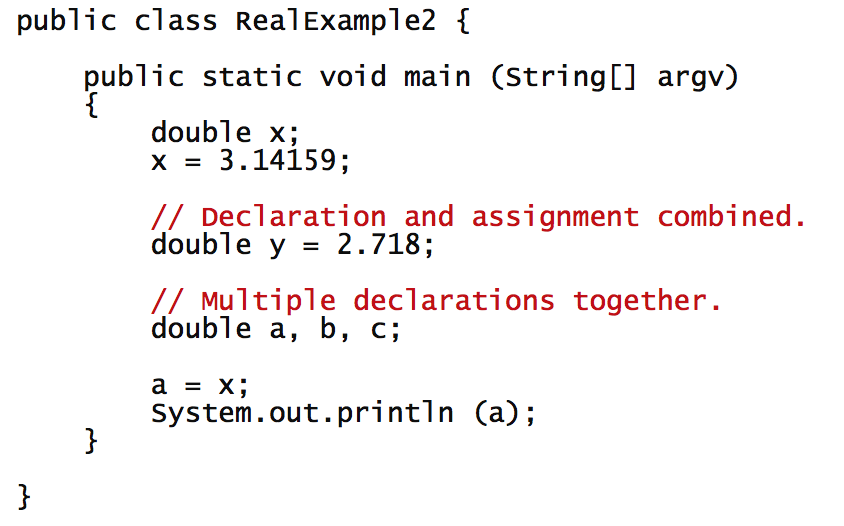
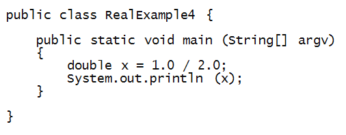
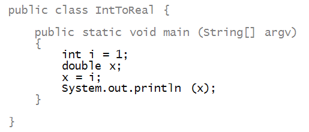
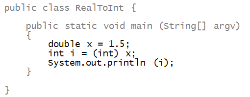

CS 1111
Introduction to Software Development
GWU Computer Science
Introduction to Software Development
GWU Computer Science
And, once we've worked with integers, we'll also do some "number crunching".
If you do not have your Codio course ready, use any text editor or simple IDE. Some possibilities are:
Before we move forward, let's catch up (complete any remaining work from the previous module)
In this case, make sure we've got:
About real numbers:
Just like we did with integers, we can declare variables and assign values to them, using the reserved word double

Another example:

float x = 3.14159;
Again, as with integers, the standard operators apply:

Activity 1:
Complete the program called
AreaExample.java
to print out the area of a circle whose radius is specified in the code.
The template is in Codio, Mod 5 [in-Lecture]: More numeric Types and Casting
Activity 2:
Do the increment and decrement operators work with
real numbers? Write a program called
TestIncrement.java
to find out. In this program, declare variables x and y of type
double,
setting them to x=1.1 and y=1.2;
then apply the increment (++) and decrement (--) operators to
x and y respectively.
Now consider this simple example:

Activity 3: Change the assignment to:
and see what prints. Explain the result.
Consider the following program:

Activity 4: What you suppose will be printed? Try it. Then, change the program to try the assignment the other way around: initially assign the value of 1 to i and then assign i to x.
An assignment from an int to a double works fine:

About casting:

look at the code below and identify all the syntax (spelling) and semantic(logical) errors.
Activity 6:
If the objective is to calculate the average grade of a student, find all the errors and bugs in the following program:
1 2 3 4 5 6 7 8 9 10 11 12 13 14 15 16 17 18 19 20 21 22 23 24 25 26 | public class CalcMyGrade { public static void main(String args[]) { // This is a very naive way of doing this // We'll do this in a cooler way very soon int grade1 = 86; int grade 2 = 60; int 3grade = 98; int grade_four = 76; int grade5 = 0; int sum = grade1 + grade 2 + 3grade + grade_four; System.out.print ("sum is: "); System.out.println ( sum ); int total = 5; double averageGrade = sum/total; System.out.print ("averageGrade is: "); System.out.println ( averageGrade ); // Applying a +1 point bonus AND THEN a 10% curve double finalGrade = (averageGrade*1.1)+1; System.out.println(finalGrade); } |
One very useful feature is to be able to "read in" vallues from the terminal. The way we'll do this is to use a predefined block of code that we will not explain in detail for now. The block of code is between the comments:
1 2 3 4 5 6 7 8 9 10 11 12 13 14 15 16 17 | import java.util.Scanner; public class ScannerTest { public static void main(String args[]) { System.out.println ("Give me a number and then press Enter: "); // Scanning code starts here Scanner myScanner = new Scanner (System.in); String s = myScanner.nextLine (); // Scanning code ends here System.out.println (s); } } |
Activity 7: Try the scanner code in Codio.
Sometimes, we need to do operations that are a bit more complex, like elevating a number to a power, or obtaining the square root.
Later, we'll look a t this more closely, but for now, look at the following code:
1 2 3 4 5 6 7 8 9 10 11 12 13 14 15 16 17 18 19 20 21 22 23 24 | public class PowAndSqrtTest { public static void main(String args[]) { double side = 2; // Easy squaring of a value double square = side*side; System.out.println (square); // Squaring with pow square = Math.pow(side,2); System.out.println (square); // Other powers with pow double cube = Math.pow(side,3); System.out.println (cube); // Square root with sqrt double root = Math.sqrt(square); System.out.println (root); } } |
Activity 8: we will open a new file in Codio, and complete this example.